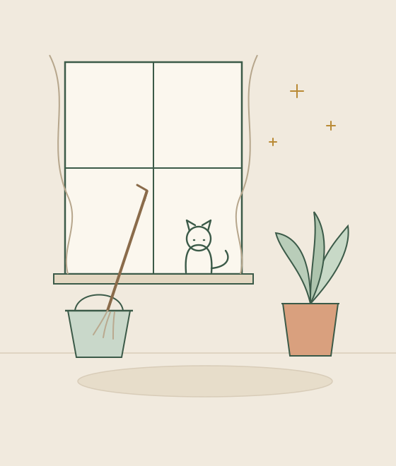

01
Заявка
Позвоните или оставьте заявку на сайте. Напишите, какая услуга нужна, площадь и удобное время.
Генеральная уборка, кухня, ванная и санузел, окна и балконы, бытовая техника, офисы и коммерческие помещения. Полный список услуг и цены — в прайс-листе.
Работаем только в Калининграде. За город и в другие города области не выезжаем.

Шесть позиций из прайса. Остальные услуги, включая мытьё техники, уборку подъездов и коммерческих помещений, — на странице цен.
Основная уборка помещения по прайсу. Точный объём работ зависит от площади и состояния.
Кухня отдельно от остального помещения: поверхности, техника и рабочая зона.
Ванная и санузел: сантехника, плитка, зеркала и поверхности.
Стёкла, рамы и подоконники. Стоимость считается за квадратный метр и зависит от доступа.
Офисы и небольшие коммерческие помещения. Цена указана за квадратный метр.
Помещение после жильцов: поверхности, полы, санузел и кухня. Цена за квадратный метр.
Без анкет на десять страниц: достаточно сказать, что нужно убрать и где.
Позвоните или оставьте заявку на сайте. Напишите, какая услуга нужна, площадь и удобное время.
Обсудим состояние помещения и детали: этаж, доступ, тип окон, количество техники.
Назовём цену по прайсу и согласуем её до начала работ. Если объём больше — обсудим доплату заранее.
Приезжаем в согласованное время в пределах Калининграда. За город не выезжаем.
Это минимальная стоимость услуги. Итоговая зависит от площади, состояния помещения и объёма работы.
У части услуг цена считается не за помещение целиком, а по единице. Она указана в примечании к строке прайса.
Мытьё окон и люстр оцениваем после уточнения размера, количества и доступа к конструкции.
Выезжаем в пределах города. В другие города и посёлки области не ездим — дорога не входит в цену.
Там все услуги и цены: от генеральной уборки и мытья техники до уборки офисов, подъездов и помещений после пожара.